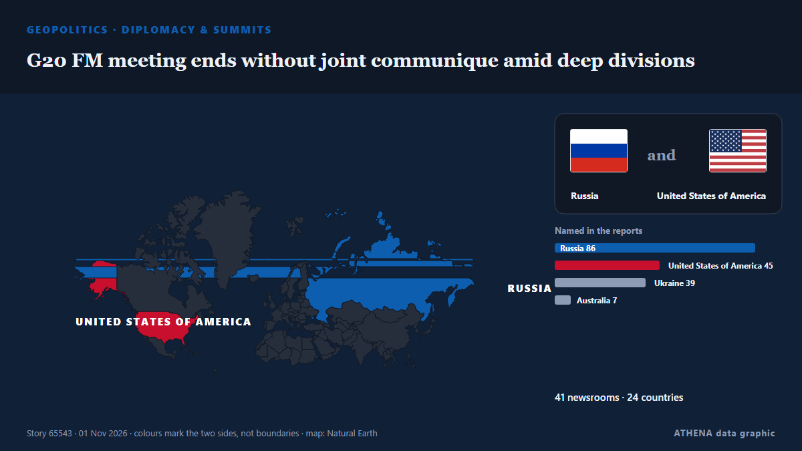

G20 FM meeting ends without joint communique amid deep divisions

Foreign ministers from the Group of 20 leading economies are gathering in Atlanta on October 30-31 for talks expected to expose continuing divisions among Western governments over Russia's war in… de RFE/RL (English)
Relayé de façon indépendante par 41 médias dans 24 pays depuis le 30 oct. ; premier à l'annoncer : Anadolu Agency (English) ; la couverture est à son pic. ATHENA juge le risque accru (5.5/10), surtout en raison de la gravité des dommages décrits et de sa portée géographique et sectorielle. La confiance est de 91 % (élevée) : 41 médias indépendants le confirment, avec une fiabilité moyenne des sources de 76 %. Médias par pays : Singapour (7), Turquie (5), Ukraine (4). Couverture : du 30 oct. au 31 oct., 16 heures.
Pourquoi c'est important: L'invasion à grande échelle de l'Ukraine par la Russie a commencé en février 2022. Ce suivi couvre les combats, les frappes sur les infrastructures et la diplomatie autour de la guerre, selon la presse du monde entier.
Ce qui a changé : 18 nouveaux articles de 17 rédactions dans les 24 heures jusqu'au 1 nov..
Premier titre : China backs South Africa to attend G20 meetings as US set to host top diplomats
Les titres sont affichés en anglais, tels que publiés.
En un coup d'œil
Sélectionné, noté et rédigé par la méthodologie publiée d'ATHENA. Aucun rédacteur n'intervient sur un événement en particulier. Comment il est produit ›
| 30 Oct 09:24 UTC | 6 |
|---|---|
| 30 Oct 11:24 UTC | 1 |
| 30 Oct 13:24 UTC | 3 |
| 30 Oct 15:24 UTC | 6 |
| 30 Oct 17:24 UTC | 5 |
| 30 Oct 19:24 UTC | 7 |
| 30 Oct 21:24 UTC | 7 |
| 30 Oct 23:24 UTC | 6 |
| 31 Oct 01:24 UTC | 3 |
| 31 Oct 03:24 UTC | 2 |
| 31 Oct 05:24 UTC | 1 |
| 31 Oct 07:24 UTC | 1 |
| 31 Oct 09:24 UTC | 2 |
| 31 Oct 11:24 UTC | 0 |
| 31 Oct 13:24 UTC | 1 |
| 31 Oct 15:24 UTC | 4 |
| 31 Oct 17:24 UTC | 6 |
| 31 Oct 19:24 UTC | 0 |
| 31 Oct 21:24 UTC | 1 |
| 31 Oct 23:24 UTC | 2 |
| 01 Nov 01:24 UTC | 0 |
| 01 Nov 03:24 UTC | 0 |
| 01 Nov 05:24 UTC | 0 |
| 01 Nov 07:24 UTC | 1 |
| 01 Nov 09:24 UTC | 1 |
| 30 Oct 09:36 UTC | 0.0 |
|---|---|
| 30 Oct 18:48 UTC | 1.3 |
| 30 Oct 20:12 UTC | 2.3 |
| 30 Oct 20:49 UTC | 5.0 |
| 31 Oct 20:26 UTC | 5.9 |
| 01 Nov 10:06 UTC | 5.5 |
Pourquoi ces chiffres
Importance
Risque
Confiance
La couverture : qui l'a annoncé, et quand
titre tel que publié · ouvre l'original- Anadolu Agency (English) · TurquieChina backs South Africa to attend G20 meetings as US set to host top diplomats
- TASS (English) · RussiePress review: EU, NATO try to hinder Ukraine peace and Russia seeks constructive G20 talks
- The Straits Times · SingapourRifts over wars in Ukraine, Middle East loom over G-20 meeting in US
- RFE/RL (English) · INTG20 Diplomats Meet In Atlanta Amid Divisions Over Russia, Ukraine
- Al-Monitor · États-UnisRifts over wars in Ukraine, Middle East loom over G20 meeting in US
- Al-Monitor · États-UnisRubio urges G20 cooperation amid rifts over wars in Ukraine, Middle East
- TASS (English) · RussieStates of global majority willing to expand ties with Russia, despite geopolitics — Lavrov
- Stuff · Nouvelle-ZélandeG20 diplomats, including from China and Russia, face deep rifts as they prepare to meet in Atlanta
- Anadolu Agency (English) · TurquieG20 foreign ministers' meeting kicks off in US amid global tensions
- The Independent · Royaume-UniG20 leaders photo scrapped after Europe refuses to be pictured with Russia
- The Straits Times · Singapour‘No normalcy with Russia’: G-20 foreign ministers skip photo-op over Lavrov’s presence
- Kurdistan24 (English) · IrakRubio Urges G20 Unity, Divisions Mount
- Anadolu Agency (English) · TurquieGerman foreign minister rules out joint G20 family photo with Russia's Lavrov
- The Korea Times · Corée du SudUS scraps G20 photo after European diplomats object to being pictured with Russia's Lavrov
- Kyiv Independent · UkraineAnother round of peace-talk masquerade awaits Ukraine
- Euronews English · FranceEU diplomats object to G20 photo with Lavrov, prompting US cancellation
- BBC News · Royaume-UniG20 'family photo' cancelled after protests over presence of Russian minister
- Sydney Morning Herald · AustralieUS cancels G20 ‘family photo’ after Europeans, Australia object to Russia
- Ukrinform (English) · UkraineUkraine calls for emergency UN Security Council meeting over new Russian attacks
- Kyiv Independent · UkraineG20 family photo allegedly canceled over Russian presence
- NDTV · IndeG20 Ministers Skip Photo Op In Iran As Russia-Ukraine War Creates Rifts
- Kyiv Post · UkraineEuropean Diplomats Refuse to Pose for Photo With Russia’s Lavrov at G20
- Al Jazeera English · QatarRubio hosts G20 talks as Russia’s Lavrov presence sparks tensions
- ProtoThema English ·Lavrov becomes the ‘elephant in the room’ at G20 as European ministers refuse to pose for photo with him
- The Straits Times · SingapourZelenskiy says he will head to Turkey for talks
- Al Jazeera English · QatarG20 drops group photo as Europeans refuse to stand with Lavrov
- Al-Monitor · États-UnisZelenskiy says he will head to Turkey for talks
- TRT World · TurquieLavrov calls talk with Rubio 'decent', accuses Europeans of 'arrogant boycott' at G20 summit
- TASS (English) · RussieRussia welcomes US efforts to depoliticize G20 discussions — Lavrov
- The Straits Times · SingapourTop EU diplomat says Russia’s Lavrov presented ‘lies’ at G-20 talks
- Free Malaysia Today · MalaisieTop EU diplomat says Lavrov presented ‘lies’ at G20 talks
- The Canadian Press (via CityNews) · CanadaAnand says she called out Russian counterpart invited by U.S. to G20 ministerial
- The Straits Times · SingapourRussia's Lavrov says inviting Poland to attend G20 meeting breaks diplomatic rules
- ABC News Australia · AustralieG20 foreign ministers skip 'family' photo amid objections over Russia
- The Straits Times · SingapourLavrov says Zelensky comments are unhelpful, Russia’s position is unchanged
- New Straits Times · MalaisieTop EU diplomat says Lavrov presented 'lies' at G20 talks
- Xinhua (English) — page reader · ChineLavrov urges Japan to abandon unfriendly policy to resume full-fledged dialogue with Russia
- The Guardian · Royaume-UniUS cancels G20 ‘family photo’ after Australia, UK and others refuse to appear with Russia
- The Straits Times · SingapourRubio urges G-20 cooperation amid rifts over wars in Ukraine, Middle East
- Anadolu Agency (English) · TurquieRussian foreign minister says he had 'not bad, though brief' talks with Rubio on G20 sidelines